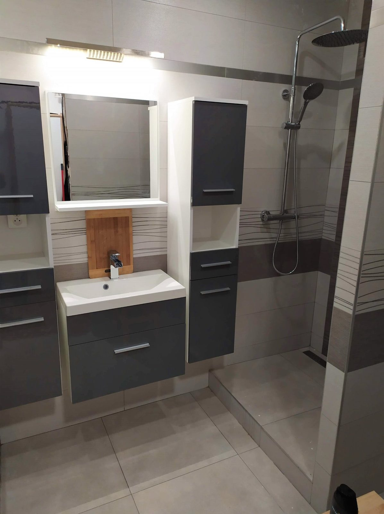
Rekonstrukce bytů a koupelen
Z nevyhovujícího bytového jádra uděláme moderní koupelnu. Postaráme se o bourání, zednické práce, obklady i finální úklid.
Co pro vás zajistíme
Kompletní rekonstrukce od bourání po úklid
Na přání zákazníka provedeme a zajistíme tyto práce:
- demolice bytového jádra včetně odvozu sutě
- kompletní zednické práce, obklady a dlažby
- montáž krbu a sádrokartonových konstrukcí
- pokládka podlah
- montáž oken a dveří
- malířské a natěračské práce
- úklid po dokončení prací
- další profese přes ověřené partnery: voda, plyn, topení, elektro, krby, klimatizace, truhláři a tesaři
Naše realizace
Fotografie z našich zakázek
Kliknutím na fotku ji zvětšíte. Mezi fotkami můžete listovat šipkami.
Koupelny a WC
28 fotografií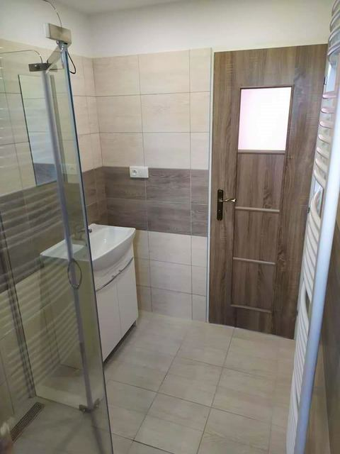
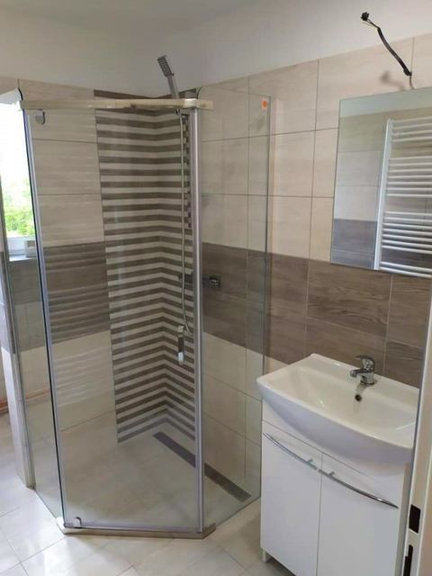
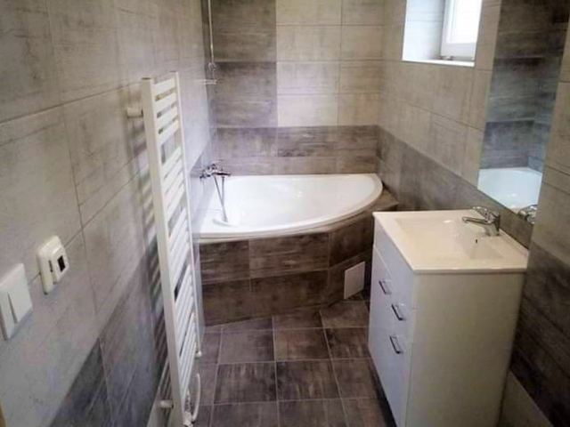

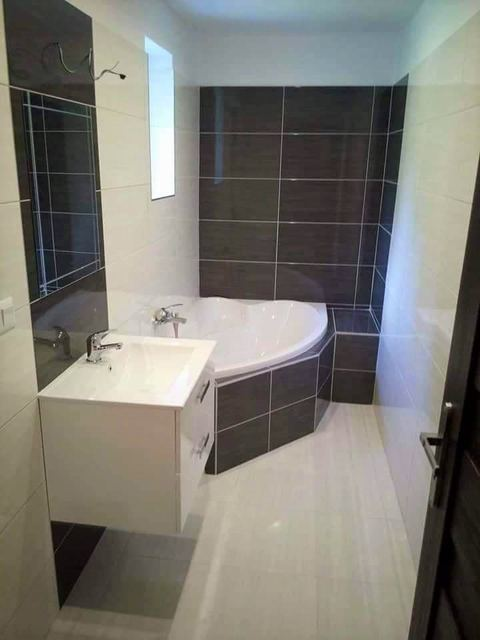
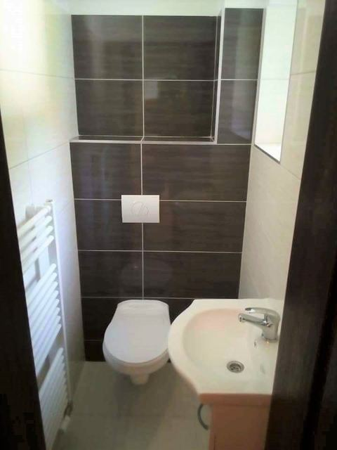
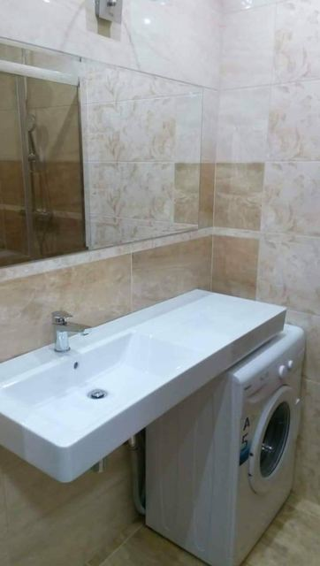
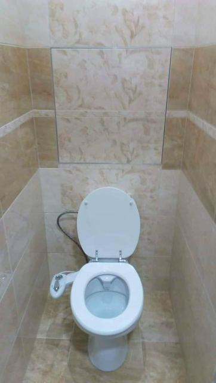
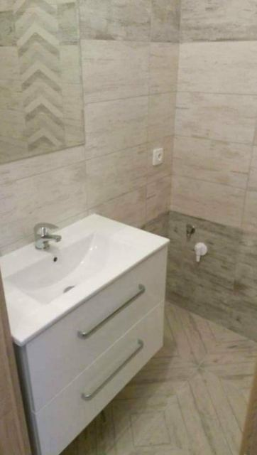
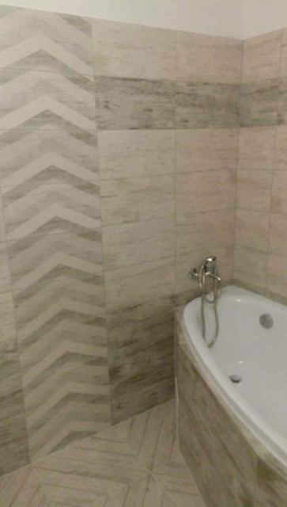
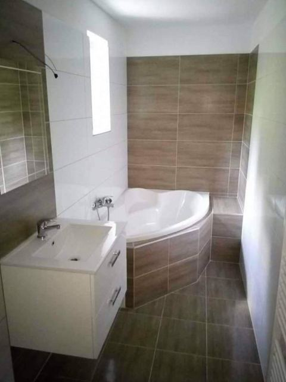
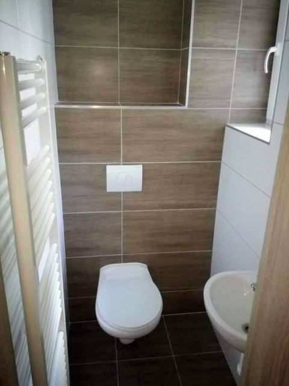
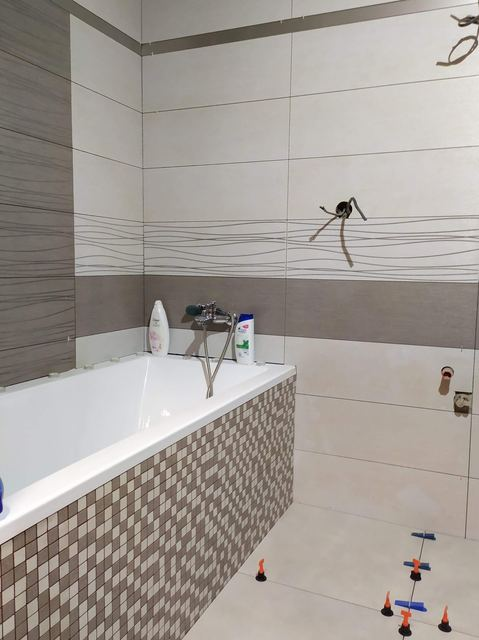
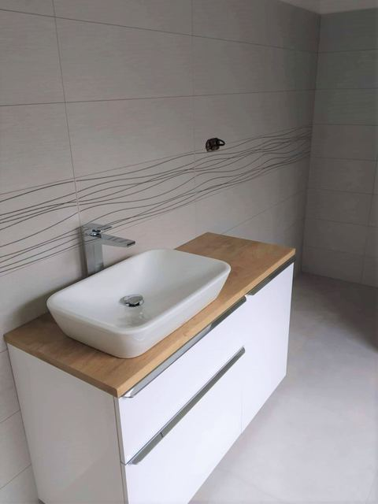
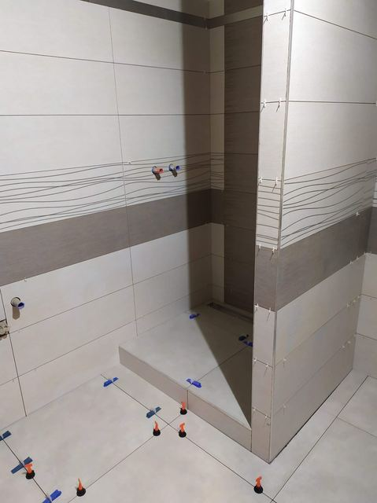
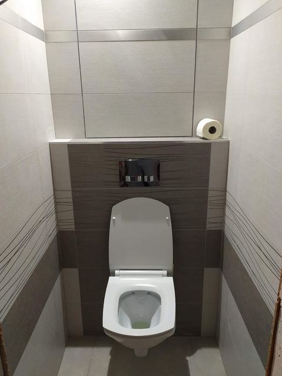
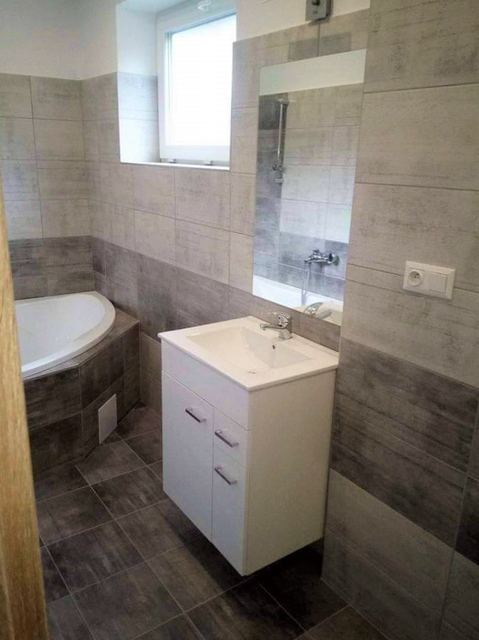
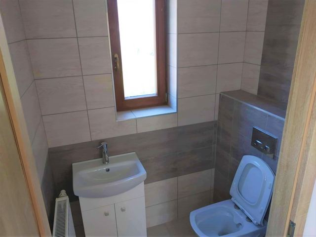
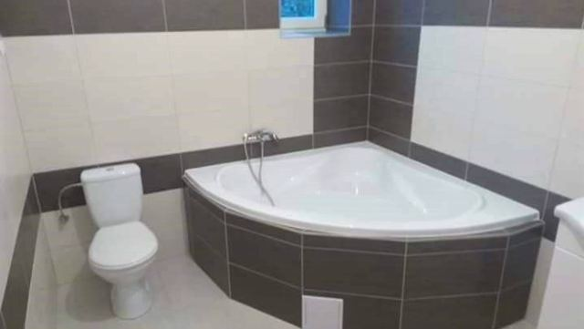

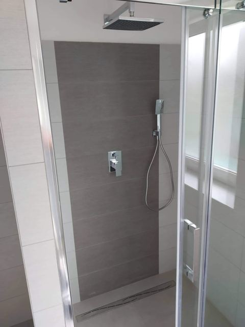
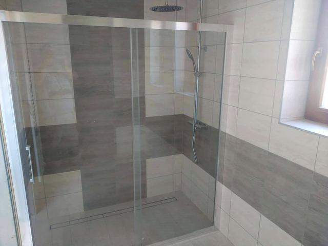
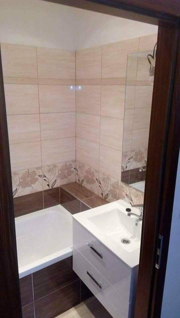
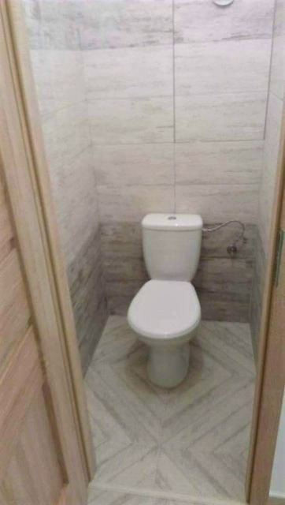
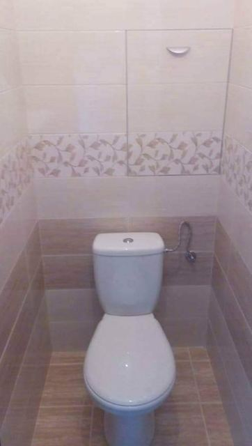
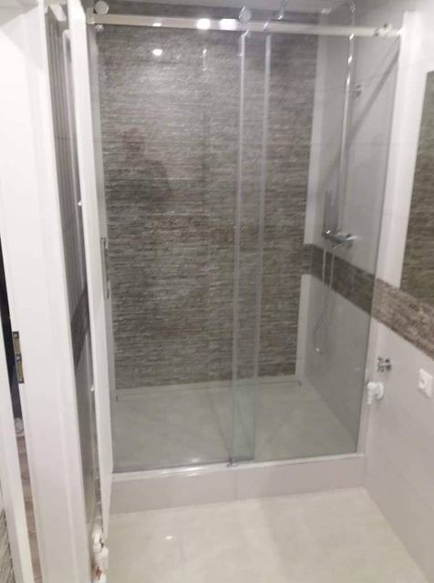
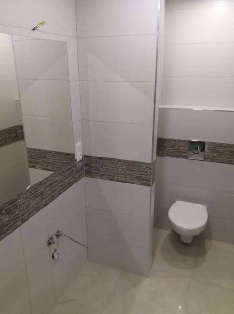
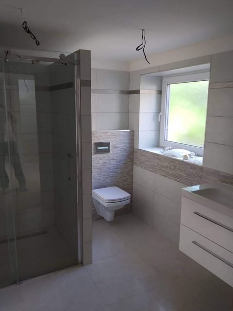
Dveře a podlahy
5 fotografií


Plánujete stavbu nebo rekonstrukci?
Přijedeme k vám, prohlédneme místo a zdarma připravíme cenovou nabídku.